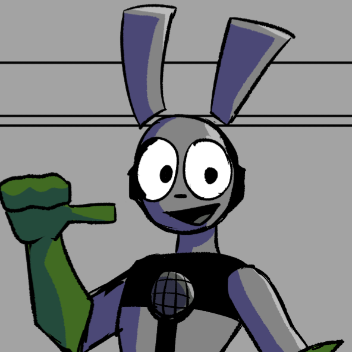

Tom Karrie
Tom Karrie
“Tell me, what's stopping you from bringing Ina back? You're afraid she'll be corrupted like I was? What's stopping you from playing God once again? Your guilt, your anger, I feel all of it. So let me rid this suffering. Let me end our pain." - Rev Ketsueki
Rev Ketsueki is a clone of Reyn Keisuke, who had lost his humanity in an attempt to redeem himself for the involuntary murder of Ina Winters. Trying to find a way to forgive himself, and blinded from the scars of his own attempts of suicide that had driven him into madness, he shifts the blame to the one solely responsible, his creator, the original Reyn Keisuke.
Roy Keiji, a gruff but loyal ronin, found his way to Akira's Insurgency after a falling out with the Keiji Clan. As a rowdy apprentice, Roy clashed frequently with the clan's strict hierarchy, yearning for a more just and equitable society. His time with the clan honed his skills in swordsmanship and hand-to-hand combat, but it also instilled in him a deep distrust of authority figures. Now, he wanders from country-to-country, before stumbling into Starlight City. Despite his gruff exterior, Roy possesses a hidden sense of humor that occasionally shines through, reminding his comrades that even in the midst of struggle, there is room for camaraderie and laughter.
| Aliases | The Ronin, Master Keiji |
| Relatives | Larorien Keiji |
| Affiliation | The Insurgency |
| Occupation | Barista(?), Trainer |
| D.O.B | 7 January 2019 |
Roy has dark blue hair with dreads tied like a pony tail and some as bangs. He is built and is covered in sword scars.
In his early years of vigilantism, Reyn dons goggles with blue lenses and a gray mask while also sporting a tight turtleneck suit under a cut out red jacket and red hand bandages.
Nearing the finale of Part 1, Reyn dons a red armor designed by himself and built by Ina and Kyle; he also wears red gloves and boots.
After the events of Part 2, Reyn's Classic suit gets rusted -- taking on a darker tone. He wears Ina's scarf and attaches Ava's hat on his belt as a promise to protect those he can, and as a reminder of the loved ones he's failed to protect.
When he isn't doing vigilante work, Reyn wears a red jacket, a tight turtleneck underneath and wearing red shoes with a white stripe going across (similar to Sonic the Hedgehog's shoes)
Achieved in Part 2, Reyn with an overflow of Chi gained a new form in his battle against Rev. This form gives Reyn spiky black hair, a tear mark under his eyes and a permanent scowl. He also has visible Chi flowing through his whole body like rivers.
When Reyn acquired the might of the Ultimate Gem, he gains a power boost never before seen. With the power of his Chi and Gem energy, Reyn's hair turns white and gains pointy marks under his lower eyelids.
(If MUI / G5 was good :3)
He has the ability to create physical objects. In his early days, he had to draw the objects to create them. After some experience, he has learned to create objects just with his mind, but it still takes him a lot of focus and energy to do so.
Reverie mode gives him an increase surge of energy, similar to Doping. It gives Reyn virtually unlimited energy to create whatever he desires. However it comes with the drawback that once the form runs out, Reyn becomes unable to move for hours.
The Originator form allows Reyn to create and edit properties of anything around him, with the added bonus of distorting the space and time around him. This allows him to attack an opponent far in the future without the opponent seeing it coming (4th wall breaking attacks, attacking from panels above)
Akira Iekami was but a simple family man with a wife and soon-to-be-born daughter. All was going well until a sudden attack upon San Fresco took it all away. The loss of his wife and the condition his newborn was born with damaged Akira's view upon PAL Inc., who were speculated to be indirectly responsible for the attack.
With the intention to tarnish PAL Inc., Akira forms an insurgency consisted of people with grudges against PAL Inc. in one way or another. However, in an attempt to expose them - they instead found evidence that points to PAL Inc.'s actions being true and noble. Being unable to accept being wrong, he still views PAL Inc. negatively.
R
| Aliases | Leader of the Insurgents |
| Relatives | (His Daughter: Name Pending) |
| Affiliation | The Insurgency |
| Occupation | Lawyer(?) |
| D.O.B | TBD |
| Power | HAVOC, HAVOX |
Reyn Keisuke has blue hair and usually in red attire.
In his early years of vigilantism, Reyn dons goggles with blue lenses and a gray mask while also sporting a tight turtleneck suit under a cut out red jacket and red hand bandages.
Nearing the finale of Part 1 Reyn dons a red armor designed by himself and built by Ina and Kyle Wilson, he also wears red gloves and boots.
After the events of Part 2, Reyn's Classic suit gets rusted -- taking on a darker tone. He wears Ina's sweater and attaches Ava's hat on his belt as a promise to protect those he can, and as a reminder of the loved ones he's failed to protect.
When he isn't doing vigilante work, Reyn wears a red jacket, a tight turtleneck underneath and wearing red shoes with a white stripe going across (similar to Sonic the Hedgehog's shoes)
Achieved in Part 2, Reyn with an overflow of Chi gained a new form in his battle against Rev. This form gives Reyn spiky black hair, a tear mark under his eyes and a permanent scowl. He also has visible Chi flowing through his whole body like rivers.
When Reyn acquired the might of the Ultimate Gem, he gains a power boost never before seen. With the power of his Chi and Gem energy, Reyn's hair turns white and gains pointy marks under his lower eyelids.
(If MUI / G5 was good :3)
He has the ability to create physical objects. In his early days, he had to draw the objects to create them. After some experience, he has learned to create objects just with his mind, but it still takes him a lot of focus and energy to do so.
Reverie mode gives him an increase surge of energy, similar to Doping. It gives Reyn virtually unlimited energy to create whatever he desires. However it comes with the drawback that once the form runs out, Reyn becomes unable to move for hours.
The Originator form allows Reyn to create and edit properties of anything around him, with the added bonus of distorting the space and time around him. This allows him to attack an opponent far in the future without the opponent seeing it coming (4th wall breaking attacks, attacking from panels above)
Julia Edwards is a personal trainer who joined Akira's Insurgency to get to the truth about her brother's disappearance, she was raised with PAL already being a major part of her childhood. She knew Joseph and the Global Operatives very well. Along the way, she started to get some answers and finally..... the truth
| Aliases | Julie, Dragon-fist |
| Relatives | Wendi Edwards, Steven Edwards |
| Affiliation | The Insurgency |
| Occupation | Personal Trainer, Insurgent |
| D.O.B | 5 August 2019 |
Julia Edwards has dark red-brown hair, a very muscular body and is usually seen in sports outfits.
In his early years of vigilantism, Reyn dons goggles with blue lenses and a gray mask while also sporting a tight turtleneck suit under a cut out red jacket and red hand bandages.
Nearing the finale of Part 1, Reyn dons a red armor designed by himself and built by Ina and Kyle; he also wears red gloves and boots.
After the events of Part 2, Reyn's Classic suit gets rusted -- taking on a darker tone. He wears Ina's scarf and attaches Ava's hat on his belt as a promise to protect those he can, and as a reminder of the loved ones he's failed to protect.
When he isn't doing vigilante work, Reyn wears a red jacket, a tight turtleneck underneath and wearing red shoes with a white stripe going across (similar to Sonic the Hedgehog's shoes)
Achieved in Part 2, Reyn with an overflow of Chi gained a new form in his battle against Rev. This form gives Reyn spiky black hair, a tear mark under his eyes and a permanent scowl. He also has visible Chi flowing through his whole body like rivers.
When Reyn acquired the might of the Ultimate Gem, he gains a power boost never before seen. With the power of his Chi and Gem energy, Reyn's hair turns white and gains pointy marks under his lower eyelids.
(If MUI / G5 was good :3)
He has the ability to create physical objects. In his early days, he had to draw the objects to create them. After some experience, he has learned to create objects just with his mind, but it still takes him a lot of focus and energy to do so.
Reverie mode gives him an increase surge of energy, similar to Doping. It gives Reyn virtually unlimited energy to create whatever he desires. However it comes with the drawback that once the form runs out, Reyn becomes unable to move for hours.
The Originator form allows Reyn to create and edit properties of anything around him, with the added bonus of distorting the space and time around him. This allows him to attack an opponent far in the future without the opponent seeing it coming (4th wall breaking attacks, attacking from panels above)
Ina Winters is an EX-lead PAL engineer who has dedicated her life in unraveling the mystery behind her father's disappearance. She was raised with PAL already associated with her family and had known Joseph Draven for a long time. Many years after, she left PAL and joined a group of individuals with their own personal vendetta against PAL. Along the way, she encountered Reyn during the HAVOC outbreak. They joined forces and ended up falling for each other.
But after Reyn's intense battle against Evelyn, he ended up getting hospitalized for a long period of time; allowing Reyn's clone to walk free. This clone had the opposite of Reyn's abilities, but his memories were hazy and unclear. Miraculously making it to Ina's workshop from his sheer will, where she resided at the time. Despite the physical differences, Ina realized that the man was Reyn.
By guiding him and helping him regain his memories, the clone remembered who he was. Happy to be who he was once more, the clone began to hug Ina. However, he hadn't realized his shift in power from creation to erasure; and erased Ina from this reality.
| Aliases | The Mechanic |
| Relatives | Tom Karrie |
| Affiliation | The Insurgency |
| Occupation | Barista, Mechanic |
| D.O.B | 15 February 2013 |
Ina Winters has dark purple, short and spiky hair, is relatively shorter than average and is mostly seen wearing a yellow T-shirt
Ina has a day job as a Barista, she wears a green apron with a collared shirt underneath.
As home clothes, Ina finds comfort in wearing oversized tees and short shorts.
When doing her mechanic work, Ina dons a yellow mechanical uniform where she unzips the top and tied it all on her waist.
When he isn't doing vigilante work, Reyn wears a red jacket, a tight turtleneck underneath and wearing red shoes with a white stripe going across (similar to Sonic the Hedgehog's shoes)
She has no powers except her intellect in mechanical engineering, her designs and gadgets are able to take on HAVOC users.
Reyn Keisuke was but a demotivated college graduate, struggling to find meaning in day-to-day life until he gained the ability of creation. His life flipped completely from what it once was, as he learns to use his abilities for good and finds a purpose once more in his life - to bring hope to a broken city, to be the Riginator.
| Aliases | The Riginator, Hikikomo-Reyn |
| Relatives | Ava Keisuke, Reimi Keisuke |
| Affiliation | The Insurgency |
| Occupation | Animator, Vigilante/Hero |
| D.O.B | 7 January 2020 |
Reyn Keisuke has blue hair and usually in red attire.
In his early years of vigilantism, Reyn dons goggles with blue lenses and a gray mask while also sporting a tight turtleneck suit under a cut out red jacket and red hand bandages.
Nearing the finale of Part 1, Reyn dons a red armor designed by himself and built by Ina and Kyle; he also wears red gloves and boots.
After the events of Part 2, Reyn's Classic suit gets rusted -- taking on a darker tone. He wears Ina's scarf and attaches Ava's hat on his belt as a promise to protect those he can, and as a reminder of the loved ones he's failed to protect.
When he isn't doing vigilante work, Reyn wears a red jacket, a tight turtleneck underneath and wearing red shoes with a white stripe going across (similar to Sonic the Hedgehog's shoes)
Achieved in Part 2, Reyn with an overflow of Chi gained a new form in his battle against Rev. This form gives Reyn spiky black hair, a tear mark under his eyes and a permanent scowl. He also has visible Chi flowing through his whole body like rivers.
When Reyn acquired the might of the Ultimate Gem, he gains a power boost never before seen. With the power of his Chi and Gem energy, Reyn's hair turns white and gains pointy marks under his lower eyelids.
(If MUI / G5 was good :3)
He has the ability to create physical objects. In his early days, he had to draw the objects to create them. After some experience, he has learned to create objects just with his mind, but it still takes him a lot of focus and energy to do so.
Reverie mode gives him an increase surge of energy, similar to Doping. It gives Reyn virtually unlimited energy to create whatever he desires. However it comes with the drawback that once the form runs out, Reyn becomes unable to move for hours.
The Originator form allows Reyn to create and edit properties of anything around him, with the added bonus of distorting the space and time around him. This allows him to attack an opponent far in the future without the opponent seeing it coming (4th wall breaking attacks, attacking from panels above)
Also known as Patient Zero and/or Zeroe, Jason Xavier was one of the first recorded individual to have been infected by HAVOC. Unlike others who’ve been infected, Jason’s HAVOC Ability can be regarded as stronger than most, due to him having it injected into his blood stream by PAL Inc. themselves rather than having it drank in water.
Rosaline Ashley was born in New York City, where she grew up in a family of Jazz Musicians, later on she discovered her passion for Rock music. In high school, she met Kyle Wilson alongside his best friend Reyn Keisuke. Both of them were amazed by her singing abilities and her talent to play almost every instrument she could get her hands on. After high school, they all went their separate ways due to college but eventually reunited in Starlight City years later.
She received the power of sound manipulation after the HAVOC Incident. For a time, she kept these powers hidden, but with the help of Reyn and the other members of The Insurgency, she found great use for her abilities and vowed to help Reyn keep Starlight City safe from evil.
| Aliases | Rosa, SoundCaster |
| Relatives | none |
| Affiliation | The Insurgency, PAL Incorporated |
| Occupation | Record store clerk, Vigilante/Hero |
| D.O.B | 16 February 2020 |
Reyn Keisuke has blue hair and usually in red attire.
In his early years of vigilantism, Reyn dons goggles with blue lenses and a gray mask while also sporting a tight turtleneck suit under a cut out red jacket and red hand bandages.
Nearing the finale of Part 1, Reyn dons a red armor designed by himself and built by Ina and Kyle; he also wears red gloves and boots.
After the events of Part 2, Reyn's Classic suit gets rusted -- taking on a darker tone. He wears Ina's scarf and attaches Ava's hat on his belt as a promise to protect those he can, and as a reminder of the loved ones he's failed to protect.
When he isn't doing vigilante work, Reyn wears a red jacket, a tight turtleneck underneath and wearing red shoes with a white stripe going across (similar to Sonic the Hedgehog's shoes)
Achieved in Part 2, Reyn with an overflow of Chi gained a new form in his battle against Rev. This form gives Reyn spiky black hair, a tear mark under his eyes and a permanent scowl. He also has visible Chi flowing through his whole body like rivers.
When Reyn acquired the might of the Ultimate Gem, he gains a power boost never before seen. With the power of his Chi and Gem energy, Reyn's hair turns white and gains pointy marks under his lower eyelids.
(If MUI / G5 was good :3)
He has the ability to create physical objects. In his early days, he had to draw the objects to create them. After some experience, he has learned to create objects just with his mind, but it still takes him a lot of focus and energy to do so.
Reverie mode gives him an increase surge of energy, similar to Doping. It gives Reyn virtually unlimited energy to create whatever he desires. However it comes with the drawback that once the form runs out, Reyn becomes unable to move for hours.
The Originator form allows Reyn to create and edit properties of anything around him, with the added bonus of distorting the space and time around him. This allows him to attack an opponent far in the future without the opponent seeing it coming (4th wall breaking attacks, attacking from panels above)
Svetlana Volkov is a member of Global Operatives and a survivor of the San Fresco Incident.
The founder of HAVOC and the late president of PAL Inc., Joseph Draven was the man whose legacy outlasted his life. The blood of Starlight City runs through his veins, with full power and control upon those that live in it. Once was a leader who led with deception and ___ After the San Fresco incident, he vowed to fix his past wrongs and bring a new era of prosperity to The United Lands of America.
